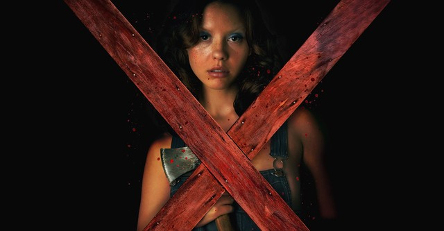
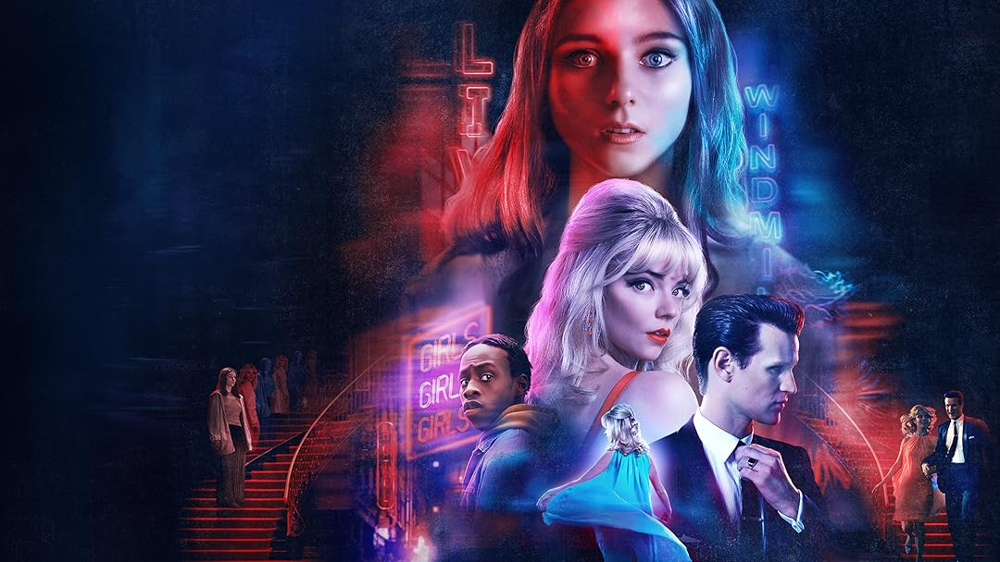
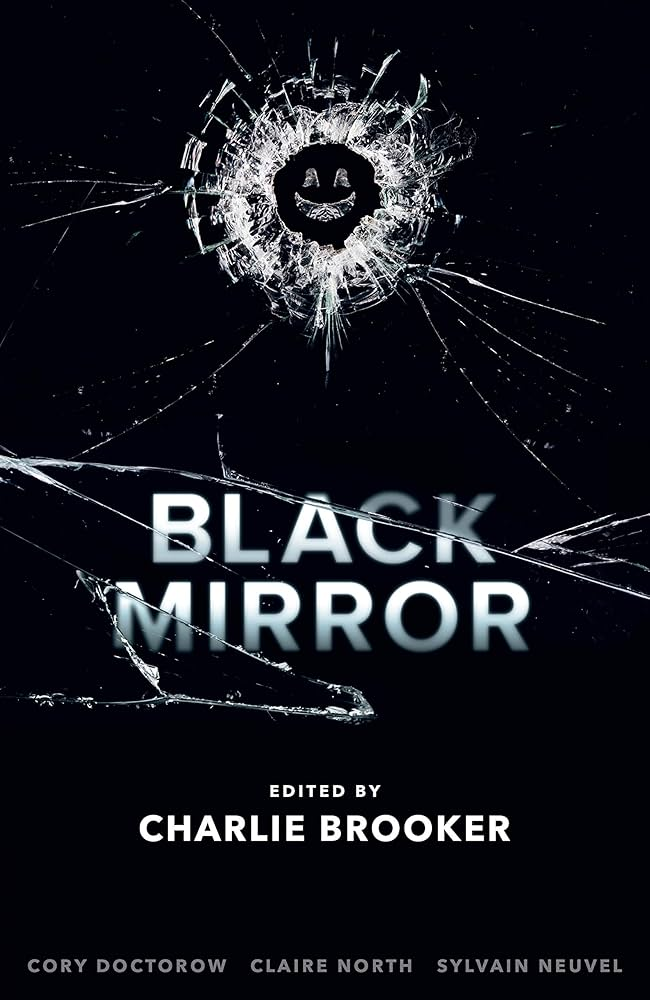
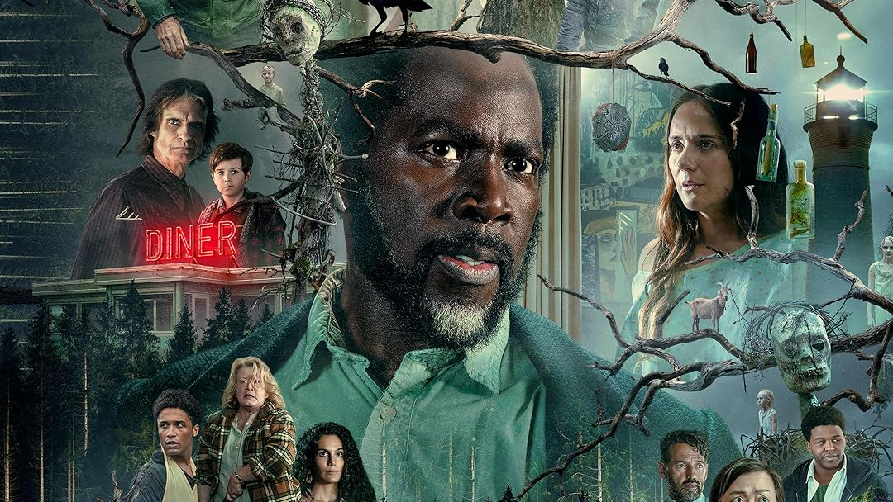
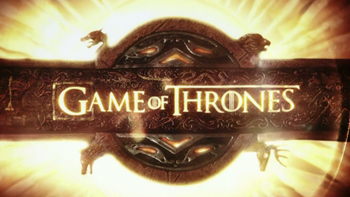

MOVIEX
I like it because it combines psychological horror with an intense and mysterious story. The dark atmosphere and unexpected scenes make every moment exciting and different from other films in the genre.
My personal collection of favorite audiovisual content.

MOVIEI like it because it combines psychological horror with an intense and mysterious story. The dark atmosphere and unexpected scenes make every moment exciting and different from other films in the genre.
I really like it for its unique visual style and the way it mixes beauty with horror. The story feels uncomfortable and captivating at the same time, and the festival setting makes the film very different and memorable.

MOVIEI love it for its aesthetics, music, and the mystery it maintains throughout the story. The combination of past and present creates very interesting and visually stunning scenes.

SERIESI like it because it shows how technology can affect people's lives in extreme ways. Each episode has a different story that impresses and keeps tension until the end.

SERIESI like this series because it combines mystery, horror, and suspense in a very interesting way. The story keeps me curious in every episode and the characters face situations that are intense and unpredictable.

SERIESI like it because of its epic battles, powerful characters, and unexpected events. The story is exciting and every season has moments full of action, drama, and emotion.